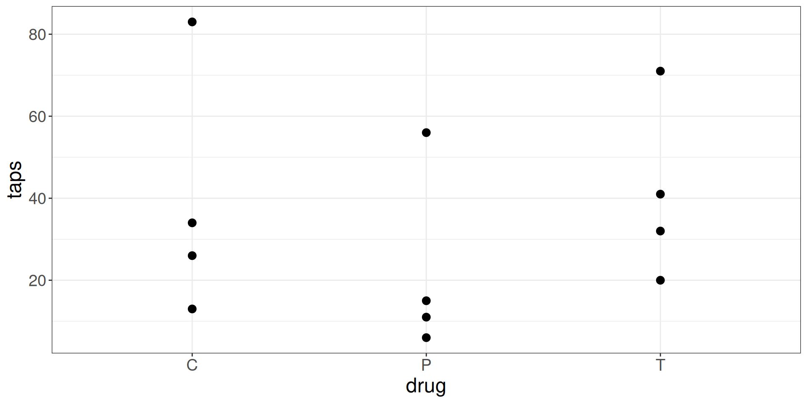
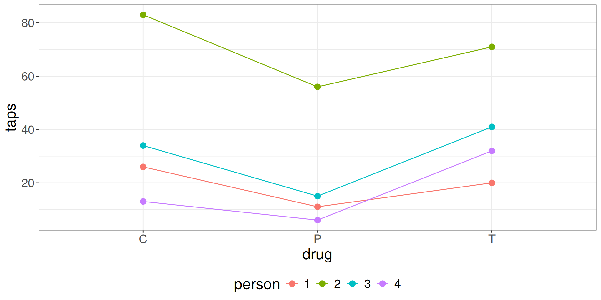

In many parts of the US, college access programs partner with high schools to provide advising and information to students and encourage them to enroll in college. Consider a study of the effectiveness of college access programs. 64 Texas high schools participated in the study, 2 from each of 32 geographic regions within the state. In each region, 1 of the high schools was randomly selected to receive support from a college access program and the other did received no support. The rates of college enrollment from each school were recorded at the end of the school year.
What are the four components of this experiment?
Study 1
In many parts of the US, college access programs partner with high schools to provide advising and information to students and encourage them to enroll in college. Consider a study of the effectiveness of college access programs. 64 Texas high schools participated in the study, 2 from each of 32 geographic regions within the state. In each region, 1 of the high schools was randomly selected to receive support from a college access program and the other did received no support. The rates of college enrollment from each school were recorded at the end of the school year.
Study 2
The goal of this study is to compare the effects of caffeine, theobromine, and a placebo, on people as measured by the rate at which they tap their fingers two hours after receiving the drug. Four subjects were recruited, and each subject received each of the three drugs. Their rate of finger tapping was measured two hours after each treatment.
Study 2
The goal of this study is to compare the effects of caffeine, theobromine, and a placebo, on people as measured by the rate at which they tap their fingers two hours after receiving the drug. Four subjects were recruited, and each subject received each of the three drugs. Their rate of finger tapping was measured two hours after each treatment.
Study 3
In this experiment, public works projects occurring in two regions of Indonesia are selected at random for government auditing. There are six projects occurring in each region; due to resource constraints only two projects in each region can be audited. After each project concludes the amount of money unaccounted for (which is presumed stolen) is measured, in order to understand the impact of government oversight on corruption.
Study 3
In this experiment, public works projects occurring in two regions of Indonesia are selected at random for government auditing. There are six projects occurring in each region; due to resource constraints only two projects in each region can be audited. After each project concludes the amount of money unaccounted for (which is presumed stolen) is measured, in order to understand the impact of government oversight on corruption.
Block Designs
Block Designs
Complete Block Design \(CB[]\)
Units are partitioned into blocks based on a blocking factor. Treatments are assigned to units such that every treatment is applied exactly once per block. Examples: Study 1 and Study 2.
Generalized Complete Block Design \(GCB[]\)
Similar to \(CB[]\), but treatments can appear more than once per block and in unequal numbers. Example: Study 3.
In both, units are randomly assigned to treatments within each block.
Why Block?
Remove unwanted variability.
Forming Blocks
Blocks should be selected to maximize the variability in the response between blocks and to minimize the variability within each block.
Sort units into blocks based on a shared characteristic
Subdivide chunks into smaller pieces
Reuse material / subjects
Study 2: Drugs and Tapping
The Data
taps person drug
1 11 1 P
2 20 1 T
3 26 1 C
4 83 2 C
5 56 2 P
6 71 2 T
7 41 3 T
8 15 3 P
9 34 3 C
10 32 4 T
11 13 4 C
12 6 4 P
EDA

EDA

Forming Blocks
Blocks should be selected to maximize the variability in the response between blocks and to minimize the variability within each block.
# A tibble: 12 × 4
# Groups: person [4]
taps person drug Y
<dbl> <fct> <fct> <dbl>
1 11 1 P 20
2 20 1 T 11
3 26 1 C 26
4 83 2 C 56
5 56 2 P 83
6 71 2 T 71
7 41 3 T 41
8 15 3 P 34
9 34 3 C 15
10 32 4 T 6
11 13 4 C 13
12 6 4 P 32
# A tibble: 12 × 4
# Groups: person [4]
taps person drug Y
<dbl> <fct> <fct> <dbl>
1 11 1 P 11
2 20 1 T 26
3 26 1 C 20
4 83 2 C 71
5 56 2 P 83
6 71 2 T 56
7 41 3 T 41
8 15 3 P 15
9 34 3 C 34
10 32 4 T 6
11 13 4 C 32
12 6 4 P 13
block_shuffle <-function() { # specific to taps_df sim_df <- taps_df |>group_by(person) |>mutate(Y =sample(taps)) anova_results <-aov(Y ~ person + drug, sim_df) f_stat <-summary(anova_results)[[1]]$`F value`[2] f_stat}replicate(10, block_shuffle())